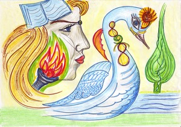
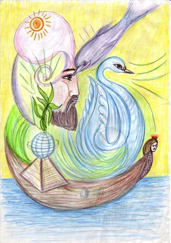
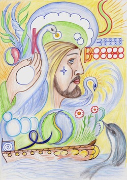
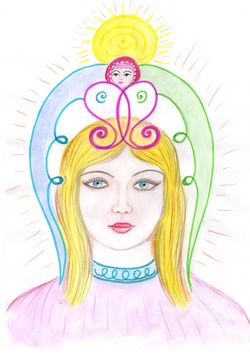
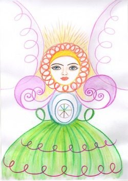
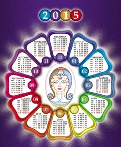
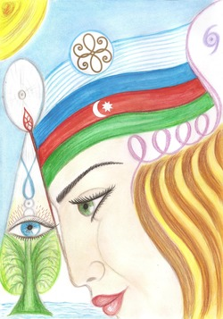
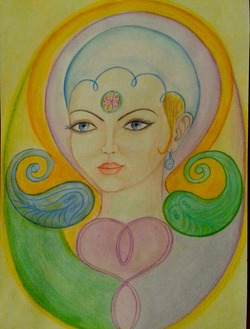

Женские образы в Альтернативной Психологии.
|
«О женщина, Краса земная, |
Рассмотрим значение женских образов на фазовых портретах(далее ФП), их преображение и смысловое значение. 
Впервые встречаемся с женским образом на ФП Волгограда -1 (2004 г). Вот какое описание к этому образу: «Женский образ на портрете расположен в первом духовном квадрате. Это значит, что открыт канал взаимодействия с духовным потенциалом предков, истории, событий.» 
На ФП Волгограда -2 (2005 г): «Интересные метаморфозы происходят с женским образом. Сохраняется двойственность: теневая сторона женской сути (Лилит, образ русалки) и светоносный Лебедь, задающий движение ковчега на более высоком уровне.» 
На ФП Волгограда -3 (2007 г): «Женские образы, проявленные в символике Волгограда, раскрывали разные ипостаси женской природы: царственное величие, смирение и милосердие, самоотверженность и материнскую любовь, доброту, плодородность, благодарение... Закономерное соединение всех этих свойств делает женщину красивой.» 
На ФП Волгоград-4 (2013): «На четвертом ФП Волгограда мы видим красивый, сильный, открытый Женский Образ, олицетворяющий процесс, происходящий в масштабах всей Земли. На это указывает тот факт, что на портрете символически присутствуют все четыре природные стихии, и их метаморфозы происходят на уровне обновляющегося сознания Человека. В верхней части ФП над головой Женского Образа – Образ Ребенка как символ рождения нового сознания. Новизна проявляется в том, что этот Образ оснащен крыльями в виде стихий: синее, янское Крыло (стихия Вода) и зеленое, иньское (стихия Земля). Мы видим Ангела, рожденного сознанием человека, а именно – Женщины. В Альтернативной психологии такой процесс гармонизации природных стихий в плане (сфере) человеческого сознания обозначается понятием «ангелизация сознания». 
На ФП 2014 года: На ФП нового Года образ Девочки. Через нее идет обновление Времени, обновление Земли, аннигиляция записей негативного мира. Лицо человека формируется во времени по подобию лика Ангельского. Вертикальные эллипсы на пересечении розовых ключей образуют руки Ангела – руки творящие. Нимб вокруг Головы (Сознание) состоит из Ключей красного цвета (иньская природа). Здесь иньская и янская энергии соединяются в направлении движения: если полное направление вокруг головы – янское, то внутри Ключей эллипсы рисуются в иньском направлении, и, наоборот). Таким образом, этот ФП работает как для мужчин, так и для женщин, гармонизируя работу полушарий мозга. «Юбка» девочки символизирует Земной шар с меридианами. Горизонтальные ключи красного цвета одновременно дают защиту и вращение. Два зеленых Ключа, симметрично расположенных по границе полусферы, обеспечивают синхронизацию фазы Земли с фазой Солнца, между ними – голубое Небо. Синхронизируется и трехмерная природа человека: телесная, душевная и духовная. На уровне души, где находится голубое Яйцо, мы видим голубой цвет разной интенсивности, отображающий качество небесной и земной воды. А в центре голубого Яйца – внутренняя запись, содержащая информацию жизни (руна «Алу»). Линии внутри зародыша Жизни соответствуют графическому изображению стихий (земля, дерево, воздух, вода, металл). Стихии, расположенные на уровне души, рассматриваются как составляющие изначальной субстанции живой природы. Коррекция информации на ФП происходит через солнечное сознание Девочки. Это молодое, новое Время. Два Больших Крыла – как Прошлое и Будущее. А сам Человек находится в Настоящем. 
ФП года 2015: «На Фазовом Портрете 2015 года – Женский Образ, олицетворяющий силу Земли, Материнства, духовного Преображения. Фазовый Портрет, центром которого является образ заботливой и чуткой Женщины, даст состояние сильной энергетической поддержки. Сила Духа сияет и растет!» 
ФП Медицины Азербайджана «ФП Медицины Азербайджана (ФП Медицины) создавался в период с 07.01 по 14.01 2013 г. в г. Баку. Образ Женщины на ФП Медицины – это образ Души Медицины. Древко Флага перед лицом Женщины является ее защитой. Древко с наконечником в виде руны «Эль», внутри четырехлепестковый цветок, который символизирует Жизнь и Ромбы как символ плодородия и рождения – соединение мужского и женского начал на уровне Вселенной. Одновременно Образ Женщины на ФП представляет собой и план ученого-исследователя.» 
ФП 2016 года: «На ФП Года-16 – Женский Образ в овале вертикально направленного Яйца, указывает на фазу развития. Процесс гармонизации стихий, организованный Женским Сознанием, отображается символикой цвета: желто-золотой фон (буддхиальный план), фиолетовый (уровень работы чакры сахасрара), голубой (указание на процесс «ангелизации сознания», который мы видели на предыдущих фазовых портретах).
Символ Зеркала Жизни, вписанный в Аджна чакру, помогает настроиться на вибрации времени, повышая качество физического и ментального здоровья. Происходит отображение позитивных мыслей на происходящие в каждодневной жизни события, коррекция восприятия реальности, со-настройка временных аспектов прошлого, настоящего и будущего. Год 2016 ставит перед нами задачу выхода на эту волну. Прошлое не «сдается в архив», а становится действующей силой, частью настоящего.
Целостный, собранный образ на фазовом портрете вызывает ощущение наполнения, концентрации энергией Времени.
Символ Тела Души нежно-розового цвета находится на уровне горловой чакры, отвечающей за речь и слово. Женщине дается сила Слова, но это Слово произносится от чистой души. Два Ключа – иньский и янский – взаимодействуют между собой. Один Ключ расположен в области сердца (коррекция сердечной и горловой чакры). Второй Ключ – снаружи (помогает через осознание приводить в соответствие наработанный внешний и внутренний опыт).
От Тела Души расходятся Крылья зеленого и синего цвета, соединенные с завитками-монадами. Таким образом корректируется (фиксируется) процесс взаимодействия жизненных сил человека с энергией природных стихий. Работа с данными символами фазового портрета нормализует деятельность сердечно-сосудистой системы.
Получая полную гармонию и защиту на уровне души, сознания, стихий, Женщина смотрит в прошлое радостно, строго и ясно. Такой взгляд позволяет увидеть красоту явления и дать ему фазовую защиту Словом. В данном состоянии можно говорить «как должно быть», не описывая то, что было, душой и речью отображая прошлое в настоящий момент, тем самым корректируя и преображая его.
Улыбки нежный свет
И гордый взгляд небесной чистоты,
Гармония Стихий, спокойствие души!
О, ангельским крылом глава укрыта.
И бережно Судьба под Символом сокрыта.
Душа и Разум — всё едино в ней.
И ночи нет — сияет Божий день!»
Описание женских образов подобрано Дежурнюк М.С. по статьям, подготовленным Росликовой Е.В. и Кузнецовой М.А.